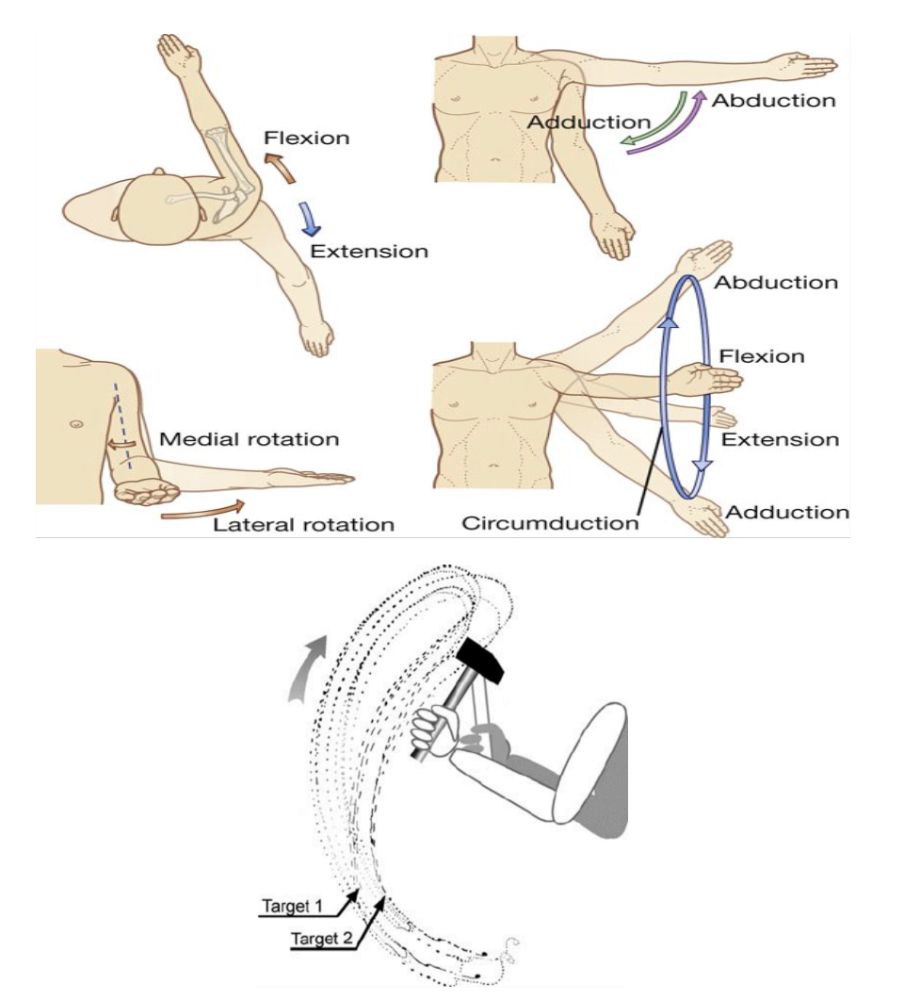
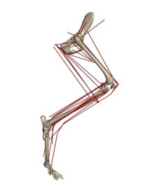
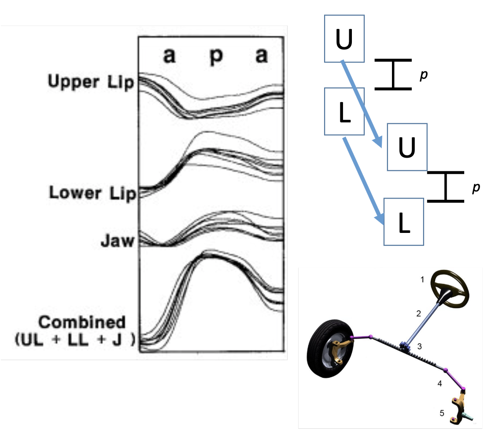

Chapter 02: Current Issues in Human Motor Control
Degrees of Freedom Problem
![]()
2025-01-24
Four “Problems” - Introduction
- Core Themes in Human Motor Control:
- Degrees of Freedom: Selecting optimal movements from infinite possibilities
- Sequencing and Timing: Organizing movement components
- Perceptual-Motor Integration: Using sensory input to guide movement
- Neural Plasticity: Understanding brain adaptation and reorganization
1. Degrees of Freedom Problem - Definition
- Nikolai Bernstein (1896-1966)
- Russian physiologist and biomechanist
- Pioneer in motor control research
- Studied skilled movements

1. Degrees of Freedom Problem - Bernstein Question
- Bernstein’s Question (1967):
- How do we select appropriate movement patterns?
- What principles guide movement selection?
- Hierarchical Organization:
- Muscle activation coordination
- Joint angle relationships
- Integrated movement patterns

1.Degrees of Freedom Problem – Synergies
- Synergies: Groups of muscles working together
- Freezing: Temporarily reducing available degrees of freedom
- Releasing: Gradually increasing degrees of freedom with practice

1. Degrees of Freedom Problem - Efficiency
Efficiency:
\[\varepsilon = \frac{W_{TOT}}{E}\]
- \(\varepsilon\): Movement efficiency
- \(W_{TOT}\): Total work performed by the body
- Positive work: Concentric muscle activity
- Negative work: Eccentric muscle activity
- \(E\): Metabolic energy expenditure
- Other reasons why we would select a solution?
Coming Up Next: Sequencing and Timing
- Understanding the order of movement components
- Timing precision in motor control
- Role of feedback in movement sequences
- Applications in sports and rehabilitation